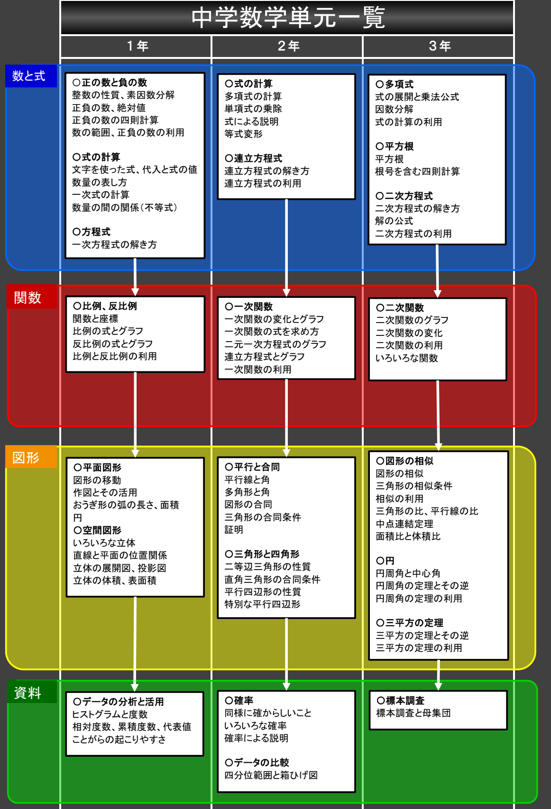

各学年の学習内容は、上から下に進み、下にいくほど学年末になります。
学年の後半では、関数や図形の分野へと進んでいくため、 学年の後半になるほど難しくなります。
また、数学は４つの分野 ( 計算、関数、図形、資料 ) からなります。
同じ分野の学習は、以下の表の横方向に進んでおり、学年をまたいで学習することになります。
そのため、ある単元の復習をしたいと思ったときには、 去年の同じ時期の復習 が必要となります。
例えば、現在の学年が２年生で、6月頃に「一次関数」を学習している場合は、１年の「関数と比例」を復習しておく必要があります。 これは、去年の同じ６月頃に学習しており、１年の 内容を絞って、復習することが効果的 になります。
